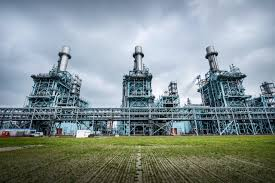

Menselijke invloed
De belangrijkste oorzaak van klimaatverandering is de mens. Vooral sinds de industriële revolutie gebruiken mensen steeds meer fossiele brandstoffen, zoals steenkool, olie en gas. Bij de verbranding daarvan komt koolstofdioxide vrij. Dat is een belangrijk broeikasgas.
Auto’s, vliegtuigen, fabrieken en elektriciteitscentrales zorgen samen voor veel uitstoot. Door die uitstoot neemt de hoeveelheid CO2 in de atmosfeer toe. Daardoor wordt meer warmtestraling vastgehouden en versterkt het broeikaseffect.
Ontbossing en fotosynthese
Ook ontbossing is een belangrijke oorzaak. Bomen nemen tijdens de fotosynthese koolstofdioxide op uit de lucht. Wanneer bossen verdwijnen, wordt minder CO2 opgenomen. Bovendien komt opgeslagen koolstof weer vrij wanneer hout wordt verbrand of vergaat.
Energie en consumptie
Het probleem hangt ook samen met hoe mensen leven. Veel energieverbruik, veel spullen kopen, veel vlees eten en veel reizen zorgen voor extra uitstoot. Daardoor is klimaatverandering niet alleen een technisch probleem, maar ook een gevolg van menselijk gedrag en consumptie.
Andere energiebronnen
Niet alle energiebronnen hebben hetzelfde effect op het klimaat. Duurzame energie, zoals zonne-energie en waterkracht, veroorzaakt veel minder uitstoot tijdens het opwekken van elektriciteit. Biomassa en kernenergie worden ook besproken in klimaatdebatten, maar daar zitten verschillende voor- en nadelen aan.
